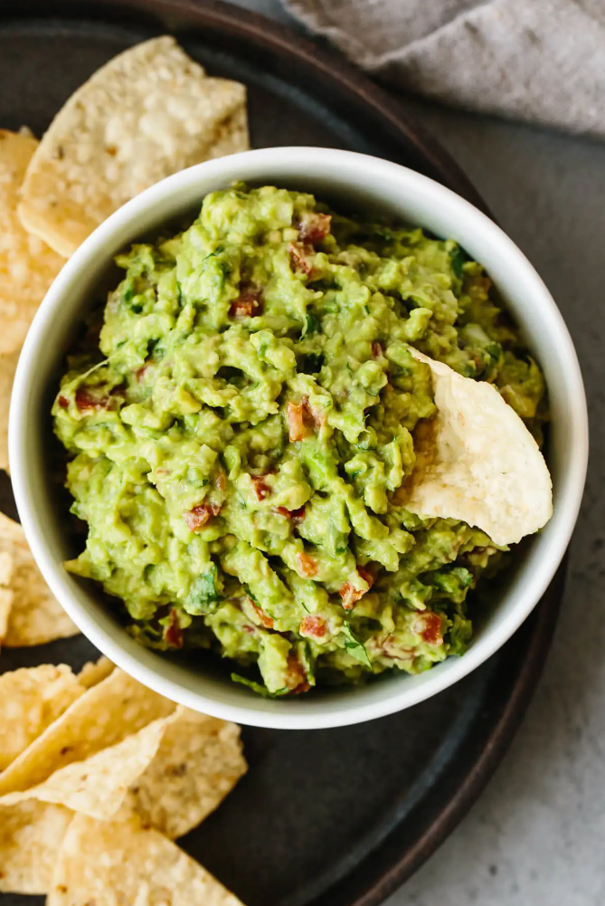

BEST EVER GUACAMOLE

Guacamole bowl
This is the best guacamole recipe as it’s simple to make and uses fresh, high-quality ingredients. Authentic guacamole doesn’t contain fillers and unnecessary ingredients. All you need is avocados, onion, tomatoes, cilantro, jalapeno pepper, lime juice, garlic, and salt. Easy and delicious!
I’m not one for hyperbole, but this really is the best guacamole recipe. When it comes to crowd-raving guacamole the key is to not get too fancy or try to be too unique. Guacamole is meant to be easy to make and delicious. Plain and simple. It’s a blend of a few high quality ingredients with flavors that meld together beautifully.
After numerous trips to Mexico and working alongside Mexican chefs, I can confirm that this guacamole is the real deal. Fresh, easy, and authentic! Just as you would enjoy it in Mexico.
GUACAMOLE INGREDIENTS
- Avocados: Want to know how to pick the best, most ripe avocados? See my tips below!
- Onion: I’m using yellow onion which is most often used in Mexico, but you could use red onion as well.
- Tomatoes: Choose Roma tomatoes which are less juicy. No one wants a watery guac.
- ilantro:C One of my favorite herbs and a staple in Mexican cuisine.
- Jalapeno: You can also use serrano pepper for a little extra heat.
- Garlic: Some people like their guac with garlic, others like it without. I love just a little.
- Lime: Freshly squeezed lime is a must. Don’t use jarred lime juice as the flavor is muted.
- Salt: A pinch of flaky salt brings it all together.
HOW DO YOU MAKE GUACAMOLE?
- So how do you pick good, ripe avocados? First, grab avocados that still have the stem attached. If the stem has been removed in the store, it’s more likely to have brown spots on the inside. Then, gently press on one end. It should be firm, but have a slight give to it.
- Slice three ripe avocados in half, remove the pit and scoop them into a mixing bowl. Then use a fork to gently mash them to your desired level of chunky or smooth. Add the onions, tomatoes, cilantro, jalapeno pepper, garlic, lime juice and salt and stir everything together. That’s it. The most delicious, easy guacamole.